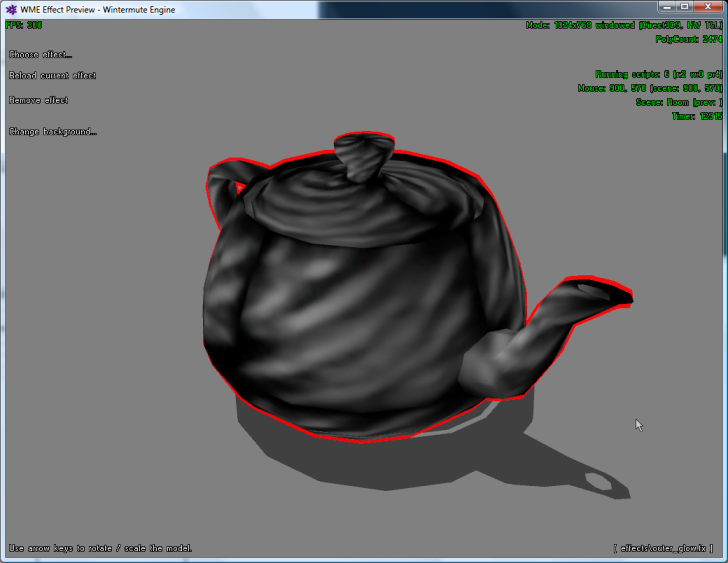

WME allows you to apply so-called "effect files" to 3D objects. Effect files (files with the .fx extension) are standard DirectX text files, describing advanced materials. You are probably familiar with applying textures to 3D objects. Effect works similarly, to certain degree, but instead of just textures, they define rendering instructions for a specific 3D object. Those include vertex and pixel shaders to be used, as well as various render states. Additionally, one effect file can contain multiple "techniques", i.e. multiple ways of achieving the effect, depending on available hardware capabilities. The most appropriate technique is then selected at runtime. Each technique can define one or more rendering passes (i.e. you may need to render the 3D object multiple times, with various shaders applied, to achieve various effects).
The effect files are a complex topic, which requires some knowledge about 3D graphics programming and about the HLSL shader language. Please refer to Microsoft DirectX documentation for details on effect files and HLSL.
Note: Effect files are only available in the Direct3D 9 version of Wintermute Engine. All functions related to effects are ignored in the Direct3D 8 version.
In WME, you can apply effects to individual sub-meshes of your 3D model. The sub-meshes are defined by material, i.e. if your actor model uses three different textures, three sub-meshes are created. Each sub-mesh is named after its original texture (as assigned in 3D modeling software). For example, if the head of your actor model uses texture called "textures\joe_head.png", the sub-mesh is internally called "joe_head". This is important to remember, because you use sub-mesh name while working with effects.
There are two ways of assigning effect to sub-meshes. Either you specify effect file(s) directly in actor definition file, or you can assign or remove effect using script commands.
To assign effect file to a sub-mesh in actor definition file, the file would contain something like this:
EFFECT
{
MATERIAL = "chrome_buckle"
EFFECT_FILE = "effects\shine.fx"
}
This tells the engine, you want to apply the effect file "effects\shine.fx" to a sub-mesh called "chrome_buckle". You can of course add several such sections to your actor definition file, for each sub-mesh/material you want to assign effect to. Please note that effect assignment must be placed AFTER the "MODEL =" lines in the definition file, because the engine needs to be aware of the existing sub-meshes before applying effects.
Assigning effects from scripts is similar. There are two methods available, actor.SetEffect() and actor.RemoveEffect():
actor.SetEffect("chrome_buckle", "effects\shine.fx");
actor.RemoveEffect("chrome_buckle");
The first line applies the effect file called "effects\shine.fx" to a sub-mesh called "chrome_buckle". The second line removes any effect from the sub-mesh. The actor.SetEffect() method returns true or false, depending on whether the effect file has been successfully compiled and applied. If the compilation fails, you can find the list of errors in wme.log file in your project directory, or in the debugging console.
Sometimes it can be useful to set effect parameters dynamically. WME provides the following script methods for setting effect parameters.
actor.SetEffectParam() - This method allows you to set a parameter of types string, logical, integer number and floating point number. For example, to change the "BorderWidth" parameter of the sample effect "outer_glow.fx", you would call something like this from a script:
actor.SetEffectParam("chrome_buckle", "BorderWidth", ToFloat(20));
Just like in the above examples, "chrome_buckle" is the name of the submesh, whose effect you are working with. "BorderWidth" is the name of the parameter you are setting. The third parameter is the value to be assigned.
actor.SetEffectParamVector() - This method works similarly to SetEffectParam(), but it allows you to assign a 4D vector to a parameter. For example, to change the "BorderColor" parameter of the sample effect "outer_glow.fx", you would call something like this:
actor.SetEffectParamVector("chrome_buckle", "BorderColor", ToFloat(1), ToFloat(0), ToFloat(0), ToFloat(1));
Notice that you are sending 4 floating point numbers, the 4 components of the 4D vector (1, 0, 0, 1).
actor.SetEffectParamColor() - This method is a simplified version of SetEffectParamVector(), specifically designed for passing color values, created using the MakeRGBA() function. The usage is:
var ColorRed = MakeRGBA(255, 0, 0);
actor.SetEffectParamColor("chrome_buckle", "BorderColor", ColorRed);
Internally this method extracts the R, G, B and alpha components of the color, converts them to a 4D vector and passes them to the effect.
In addition to these script methods, WME can fill some parameters automatically, if they are marked with known semantics. It's described in the next chapter.
As you can learn from the effect file documentation, global parameters can be augmented with so-called semantics, which define the meaning of the parameter. The engine then uses these semantics to automatically fill some shader parameters. For example, if you define a parameter like this:
float4x4 worldViewProjMatrix : WorldViewProjection;
you are defining a matrix variable called "worldViewProjMatrix" (you can use any name), with semantics "WorldViewProjection". The engine will detect that you are using known semantics, and it will automatically fill the variable with current world-view-projection matrix before rendering the mesh.
The following table contains all semantics currently supported by WME:
| Semantics | Type | Description |
| World | float4x4 | World matrix |
| View | float4x4 | View matrix |
| Projection | float4x4 | Projection matrix |
| WorldTranspose | float4x4 | Transposed world matrix |
| ViewTranspose | float4x4 | Transposed view matrix |
| ProjectionTranspose | float4x4 | Transposed projection matrix |
| WorldView | float4x4 | World-view matrix |
| WorldViewProjection | float4x4 | World-view-projection matrix |
| WorldInverse | float4x4 | Inverse world matrix |
| ViewInverse | float4x4 | Inverse view matrix |
| ProjectionInverse | float4x4 | Inverse projection matrix |
| WorldInverseTranspose | float4x4 | Transposed inverse world matrix |
| ViewInverseTranspose | float4x4 | Transposed inverse view matrix |
| ProjectionInverseTranspose | float4x4 | Transposed inverse projection matrix |
| WorldViewInverse | float4x4 | Inverse world-view matrix |
| WorldViewTranspose | float4x4 | Transposed world-view matrix |
| WorldViewInverseTranspose | float4x4 | Transposed inverse world-view matrix |
| WorldViewProjectionInverse | float4x4 | Inverse world-view-projection matrix |
| WorldViewProjectionTranspose | float4x4 | Transposed world-view-projection matrix |
| WorldViewProjectionInverseTranspose | float4x4 | Transposed inverse world-view-projection matrix |
| ViewProjection | float4x4 | View-projection matrix |
| ViewProjectionTranspose | float4x4 | Transposed view-projection matrix |
| ViewProjectionInverse | float4x4 | Inverse view-projection matrix |
| ViewProjectionInverseTranspose | float4x4 | Transposed inverse view-projection matrix |
| ViewPosition | float4 | Camera position |
| ViewDirection | float4 | Camera direction |
| DiffuseMap | texture | Current mesh texture |
| Ambient | float4 | Material ambient color |
| Diffuse | float4 | Material diffuse color |
| Specular | float4 | Material specular color |
| Emissive | float4 | Material emissive color |
| Power | float | Material specular power |
| Time | float | Current time (in seconds) |
| ElapsedTime | float | Time elapsed since last frame (in seconds) |
| ActorLightPos | float4 | Position of actor's shadow light |
| LightPosX (where X is 0..7) | float4 | Light position |
| LightDirX (where X is 0..7) | float4 | Light direction |
| LightDiffuseX (where X is 0..7) | float4 | Light diffuse color |
| LightAmbientX (where X is 0..7) | float4 | Light ambient color |
| LightSpecularX (where X is 0..7) | float4 | Light specular color |
In addition to semantics, global parameters and effect passes can be augmented by annotations. Annotations specify additional processing of effect file elements. WME supports the following annotations:
Texture annotations can contain path to image file to be loaded into a texture, using the ResourceName annotation:
texture SomeTexture
<
string ResourceName = "path\\filename.png";
>;
Please note that you can reference the texture currently assigned to the model using the DiffuseMap semantic, like this:
texture ModelTexture : DiffuseMap;
WME allows you to define render color targets and render depth targets using the following annotations:
texture RT_Tex : RenderColorTarget
<
float2 Dimensions = { 1024, 1024 };
string Format = "D3DFMT_A8R8G8B8";
float ClearDepth = 1.000000;
int ClearColor = 0x00000000;
int MipLevels = 1;
>;
texture RT_Depth : RenderDepthStencilTarget
<
float2 Dimensions = { 1024, 1024 };
string Format = "D3DFMT_D24S8";
float ClearDepth = 1.000000;
>;
WME supports simple scripting of render passes. Pass scripts allow you to switch render targets and to render a screen-aligned quad. The annotation syntax is:
pass P0
<
string Script = "RenderColorTarget0 = RT_Tex;"
"RenderDepthStencilTarget = RT_Depth;"
"Draw=Buffer;"
"Draw=Geometry;"
;
>
{
// pass code here
}
Supported script commands are:
If no Draw command is specified, the mesh is rendered.
WME only support pass scripts, not technique scripts.
There are tools allowing you designing and prototyping shaders. The most common tools are:
While these tools are useful for quick prototyping and previewing of shader effects, you shouldn't expect the effect files generated by these tools to be directly usable by game engines.
There is a simple shader preview tool included with WME Development Kit. It's a WME project and you will find it in the projects\wme_effects\ directory. To use the tool, place your .fx files into the "effects" subdirectory of the project directory. Run the project from ProjectMan. It displays a teapot model and lets you choose / reload / remove an effect file. You can also change background image (those are loaded from scenes\Room directory, you can add custom .png files there).
